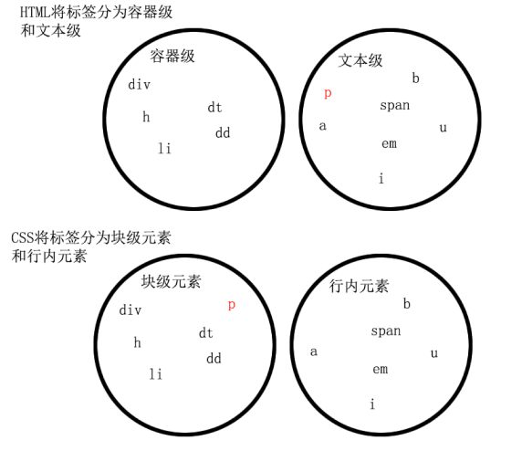
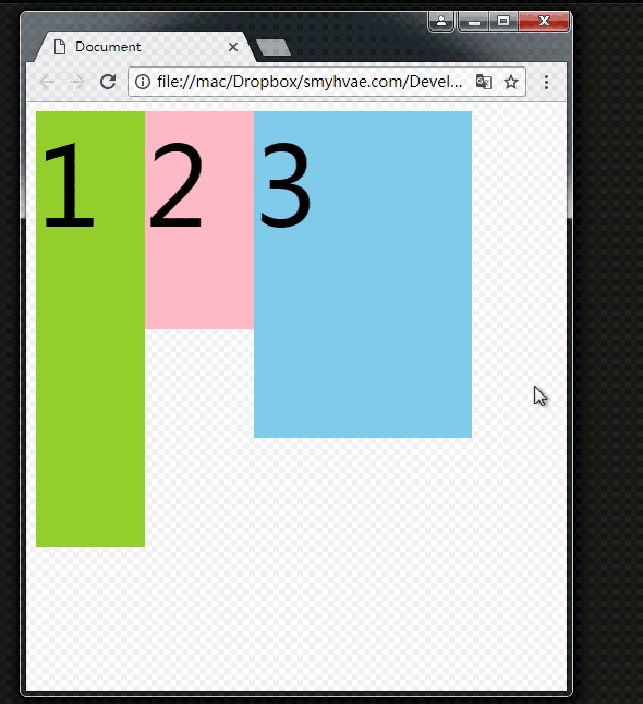

紧密连接的图片，需要写到一行紧挨着。

（1）空白折叠现象：
无论多少个空格、换行、tab，都会折叠为一个空格。如果我们想让img标签之间没有空隙，必须紧密连接。
紧密连接的图片，需要写到一行紧挨着。
（2）高矮不齐，底边对齐：
有换行未紧密连接，所有空格会被整合成1个空格。
哈哈呵呵哦哦
（3）自动换行，一行写不满，换行写。
行内元素和块级元素的区别：（非常重要）
行内元素：
块级元素：

行内元素和块级元素的相互转换
可以通过display属性将块级元素和行内元素进行相互转换。display即“显示模式”。
一旦，给一个块级元素（比如div）设置：display: inline;那么，这个标签将立即变为行内元素，此时它和一个span无异。inline就是“行内”。
同样的道理，一旦给一个行内元素（比如span）设置：display: block;这个标签将立即变为块级元素，此时它和一个div无异。
标准流里面的限制非常多，导致很多页面效果无法实现。如果我们现在就要并排、并且就要设置宽高，那该怎么办呢？办法是：移民！脱离标准流！
css中一共有三种手段，使一个元素脱离标准文档流：
demo: 默认情况下 两个div分别设置宽高，会分两行显示，效果如下：
1
2
此时，如果给这两个div增加一个浮动属性，比如float: left;，效果如下：
这就达到了浮动的效果。此时，两个元素并排了，并且两个元素都能够设置宽度、高度了（这在上一段的标准流中，不能实现，并排的只能是非块级元素不能设置宽度）。
1
2
1设置了float:left; 2没有设置悬浮
第一个div标签出现了浮动，于是这个标签在另外一个层面上进行排列。而第二个div还在自己的层面上遵从标准流进行排列。
1
2
>span是不能设置宽高的
但是，一旦设置为浮动之后，即使不转成块级元素，也能够设置宽高了。所以能够证明一件事：**一旦一个元素浮动了，那么，将能够并排了，并且能够设置宽高了。无论它原来是个div还是个span。**所有标签，浮动之后，已经不区分行内、块级了。
未设置浮动的span，设置的宽高无效 设置了浮动的span，宽高生效了我们给三个div均设置了float: left;属性之后，然后设置宽高。当改变浏览器窗口大小时，可以看到div的贴靠效果：
同样，float还有一个属性值是right，这个和属性值left是对称的。
文字部分未设置浮动，图片设置了float:right
div挡住了p，但不会挡住p中的文字，形成“字围”效果。
总结：标准流中的文字不会被浮动的盒子遮挡住。（文字就像水一样）
关于浮动我们要强调一点，浮动这个东西，为避免混乱，我们在初期一定要遵循一个原则：永远不是一个东西单独浮动，浮动都是一起浮动，要浮动，大家都浮动。
文字文字文字文字文字文字文字文字文字文字文字文字文字文字文字文字文字文字文字文字文字文字文字文字文字文字文字 文字文字文字文字文字文字文字文字文字文字文字文字文字文字文字文字文字文字文字文字文字文字文字文字文字文字文字 文字文字文字文字文字文字文字文字文字文字文字文字文字文字文字文字文字文字文字文字文字文字文字文字文字文字文字 文字文字文字文字文字文字文字文字文字文字文字文字文字文字文字文字文字文字文字文字文字文字文字文字文字文字文字 文字文字文字文字文字文字文字文字文字文字文字文字文字文字文字文字文字文字文字文字文字文字文字文字文字文字文字 文字文字文字文字文字文字文字文字文字文字文字文字文字文字文字文字文字文字文字文字文字文字文字文字文字文字文字 文字文字文字文字文字文字文字文字文字文字文字文字文字文字文字文字文字文字文字文字文字文字文字文字文字文字文字 文字文字文字文字文字文字文字文字文字文字文字文字文字文字文字文字文字文字文字文字文字文字文字文字文字文字文字 文字文字文字文字文字文字文字文字文字文字文字文字文字文字文字文字文字文字文字文字文字文字文字文字文字文字文字 文字文字文字文字文字文字文字文字文字文字文字文字文字文字文字文字文字文字文字文字文字文字文字文字文字文字文字 文字文字文字文字文字文字文字文字文字文字文字文字文字文字文字文字文字文字文字文字文字文字文字文字文字文字文字 文字文字文字文字文字文字文字文字文字文字文字文字文字文字文字文字文字文字文字文字文字文字文字文字文字文字文字 文字文字文字文字文字文字文字文字文字文字文字文字文字文字文字文字文字文字文字文字文字文字文字文字文字文字文字 文字文字文字文字文字文字文字文字文字文字文字文字文字文字文字文字文字文字文字文字文字文字文字文字文字文字文字
收缩：一个浮动的元素，如果没有设置width，那么将自动收缩为内容的宽度（这点非常像行内元素）。
上面的例子中，div本身是块级元素，如果不设置width，它会单独霸占整行；但是，设置div浮动后，它会收缩
默认情况下，两个div中间包含了两个ul 会如下显示
为li设置float:left，此时测试1和测试2 连到一起了，如果我们希望测试1 和测试2在两行 就需要浮动清除
方法1：给浮动元素的祖先元素加高度
造成前言中这个现象的根本原因是：li的父亲div没有设置高度，导致这两个div的高度均为0px（我们可以通过网页的审查元素进行查看）。div的高度为零，导致不能给自己浮动的孩子，撑起一个容器。
总结：如果一个元素要浮动，那么它的祖先元素一定要有高度。有高度的盒子，才能关住浮动。
方法2：clear:both;
网页制作中，高度height其实很少出现。为什么？因为能被内容撑高！也就是说，刚刚我们讲解的方法1，工作中用得很少。
那么，能不能不写height，也把浮动清除了呢？也让浮动之间，互不影响呢？
这个时候，我们可以使用clear:both;这个属性。
以下的例子中，我们为第二个div增加了clear:both;
clear:both的意思就是：不允许左侧和右侧有浮动对象。
这种方法有一个非常大的、致命的问题，它所在的标签，margin属性失效了。读者可以试试看。
margin失效的本质原因是：上图中的box1和box2，高度为零。
方法3：外墙法
上面这个例子中，为了防止第二个div贴靠到第二个div，我们可以在这两个div中间用一个新的div隔开，然后给这个新的div设置clear: both;属性；
同时，既然这个新的div无法设置margin属性，我们可以给它设置height，以达到margin的效果（曲线救国）。这便是隔墙法。
这里是一堵外墙和li的父级元素div同层clear:both & height:16px
方法4：内墙法
为了讲内墙法，我们先记住一句重要的话：一个父亲是不能被浮动的儿子撑出高度的。
(1)以下是一个无宽高div包住一个100px宽高的p
(2)我们把p设置为float:left 此时div没了，因为父亲是不能被浮动的儿子撑出高度的。
(3)我们在p的后面加入一个div设置clear:both，效果如下
这里是一堵内墙和li同层clear:both & height:16px
与外墙法相比，内墙法的优势（本质区别）在于：内墙法可以给它所在的家撑出宽度（让box1有高）。即：box1的高度可以自适应内容。
而外墙法，虽然一道墙可以把两个div隔开，但是这两个div没有高，也就是说，无法wrap_content。
清除浮动方法4：overflow:hidden;
overflow即“溢出”， hidden即“隐藏”。这个属性的意思是“溢出隐藏”。顾名思义：所有溢出边框的内容，都要隐藏掉。如下：
红色边框指的是最外层的父亲div，因为两个子div都是float:left 所以没有高度
文字文字文字文字文字文字文字文字文字文字文字文字文字文字文字文字文字文字文字文字文字文字文字文字文字文字文字 文字文字文字文字文字文字文字文字文字文字文字文字文字文字文字文字文字文字文字文字文字文字文字文字文字文字文字 文字文字文字文字文字文字文字文字文字文字文字文字文字文字文字文字文字文字文字文字文字文字文字文字文字文字文字 文字文字文字文字文字文字文字文字文字文字文字文字文字文字文字文字文字文字文字文字文字文字文字文字文字文字文字 文字文字文字文字文字文字文字文字文字文字文字文字文字文字文字文字文字文字文字文字文字文字文字文字文字文字文字 文字文字文字文字文字文字文字文字文字文字文字文字文字文字文字文字文字文字文字文字文字文字文字文字文字文字文字
红色边框指的是最外层的父亲div，设置overflow: hidden后，父边框就有高度了
浮动清除的总结
1、加高法:
工作上，我们绝对不会给所有的盒子加高度，这是因为麻烦，并且不能适应页面的快速变化。
2、clear:both;法:
最简单的清除浮动的方法，就是给盒子增加clear:both；表示自己的内部元素，不受其他盒子的影响。
3、隔墙法:
在两部分浮动元素中间，建一个墙。隔开两部分浮动，让后面的浮动元素，不去追前面的浮动元素。 墙用自己的身体当做了间隙。
4、overflow:hidden;法:
这个属性的本意，就是将所有溢出盒子的内容，隐藏掉。但是，我们发现这个东西能够用于浮动的清除。
我们知道，一个父亲，不能被自己浮动的儿子撑出高度，但是，如果这个父亲加上了overflow:hidden；
那么这个父亲就能够被浮动的儿子撑出高度了。这个现象，不能解释，就是浏览器的偏方。
并且,overflow:hidden;能够让margin生效。
最终demo
使用清除浮动技术，实现以下图片效果
实现效果如下：